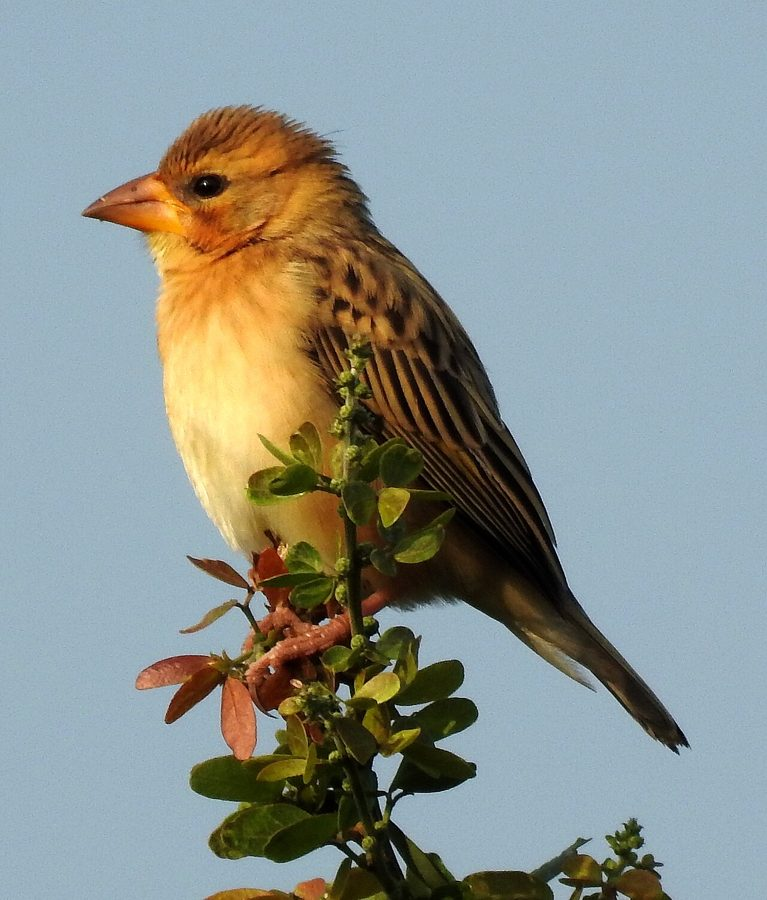

बयाBaya Weaver
Ploceus philippinus · Ploceidae · BRD-0018

- Scientific name
- Ploceus philippinus (Linnaeus, 1766)
- Family
- Ploceidae
- Hindi
- बया
- Status here
- native
- IUCN
- LC
When to look कब देखें
Present all year.
बया / Baya Weaver
Ploceus philippinus (Linnaeus, 1766) — Ploceidae
बया — हमारे खेतों और नहरों के किनारे खजूर और बबूल के पेड़ों पर लटकते सुंदर लालटेन जैसे घोंसले बनाने वाली प्रसिद्ध चिड़िया। प्रजनन काल में नर बया के सिर पर सोने जैसी चमकीली पीली कलगी और सीने पर पीला रंग आ जाता है, जबकि मादा और गैर-प्रजनन काल का नर साधारण गौरैया जैसे दिखते हैं। इसकी वास्तुकला की कलाकृति जैसी सूती-घास की बुनाई और कॉलोनी में रहने की सामाजिक आदत इसे भारतीय पक्षी जगत का एक बेजोड़ इंजीनियर बनाती है।
Quick Identification त्वरित पहचान
| Feature | Description |
|---|---|
| Size | Sparrow-sized (15 cm total length); stout conical seed-eating bill |
| Breeding Male | Bright yellow crown and breast; dark brown facial mask; dark bill |
| Female / Non-breeding | Sparrow-like; warm buff-white eyebrow; yellowish-buff underparts; streaked brown back |
| Nests | Iconic retort-shaped woven hanging nests with a long entrance tube at the bottom |
| Behaviour | Highly social; lives, feeds, and breeds in large noisy flocks (colonies) |
Field tip: Look for large, noisy flocks in grasslands or paddy fields. During the monsoon (June–September), look for trees (especially palms and thorny acacias) draped with hanging retort-shaped nests made of woven grass. The bright yellow heads of males flapping wings near the nests are unmistakable.
Morphology आकारिकी
Biometrics (typical measurements in the northern Indian plains):
| Measurement | Range |
|---|---|
| Total length | 150–152 mm |
| Wing (flattened chord) | 70–78 mm |
| Tail | 43–48 mm |
| Tarsus | 20–22 mm |
| Bill (culmen from base) | 17–20 mm |
| Weight | 22–28 g |
Plumage: Sparrows-like overall but with a stouter conical bill.
- Breeding Male: Possesses a brilliant golden-yellow crown and chest. The face has a dark blackish-brown mask covering the eyes and ear-coverts. The upperparts are dark brown streaked with yellow-buff. The lower belly is whitish-buff.
- Female & Non-breeding Male: Lacks the yellow crown and breast. The plumage is sandy-brown with dark brown streaks on the mantle. A distinct buff-colored supercilium (eyebrow) is visible.
Bare parts: Bill is dark brown to black in breeding males; pale flesh-brown in females and non-breeding males. Legs and feet are pinkish-brown. Iris is dark brown.
Vocalisations
Baya Weavers are noisy birds, especially around their breeding colonies.
- Flock call: A short, repeated contact call like chit-chit or tsip-tsip uttered constantly when flying in flocks or foraging.
- Breeding song: A long, buzzy chorus produced by males at the nesting colony, consisting of harsh wheezy notes followed by a high-pitched, drawn-out chee-ee-ee-ee. This song is accompanied by rapid wing-flapping to display the nest to visiting females.
Ecological Role पारिस्थितिक भूमिका
Granivore and seed predator. Baya Weavers feed extensively on grass and crop seeds. They regulate grass populations in wild habitats but also forage in agricultural fields.
Insectivore during breeding. To meet the high protein requirements of growing chicks, parents hunt small grasshoppers, caterpillars, beetles, and spiders in large quantities, helping suppress crop pest populations during the monsoon sowing season.
Nest provider. Their incredibly strong nests persist long after the breeding season and are frequently reused as shelter or nesting sites by other small birds, such as Indian Silverbills (Euodice malabarica) and house sparrows, as well as tree mice.
Life Cycle / Phenology जीवन चक्र
- Breeding season: June to September, coinciding with the Southwest Monsoon and the paddy cultivation season.
- Nest construction: Built exclusively by males in colonies (often 10–50 nests on a single tree). The male collects strips of wild grass or sugarcane leaves and weaves them into a hanging retort-shaped structure.
- Phase 1 (The Helmet): The male weaves a suspension ring and a helmet-like canopy.
- Inspection: Females visit the colony to inspect the half-built nests.
- Phase 2 (The Retort): Once a female selects a nest and pairs with the male, the male completes the egg-chamber and adds a vertical entrance tube (30–40 cm long) at the bottom to protect against snakes.
- Clay blob additions: Males often stick small lumps of wet river clay inside the nest wall, which helps weigh down and stabilize the nest during monsoon storms.
- Eggs: 2 to 4 pure white eggs.
- Incubation: 14–15 days, carried out entirely by the female.
- Fledging: 15–17 days. Females feed the chicks, while males may start building new nests to attract other females (polygyny).
Host Plants or Prey आहार
Primary food items:
- Grains of Paddy (Flr-0014), Pearl Millet (Bajra), and Sorghum (Jowar).
- Seeds of wild grasses (Saccharum munja, Cynodon dactylon).
- Small insects such as caterpillars, grasshoppers, beetles, and spiders.
Predators / Natural Enemies शत्रु
- Shikra (Accipiter badius) — hunts flying weavers.
- House Crow (Corvus splendens) and Treepies — raid nests if the entrance tube is short or damaged.
- Bengal Monitor (Varanus bengalensis) and Tree Snakes — climb nesting trees to feed on eggs and chicks.
- Rodents — climb down branches to chew through the nest suspension.
Agricultural / Human Relevance कृषि प्रासंगिकता
Crop visitor. They visit paddy and millet fields in large flocks, which can lead to localized damage during harvest. However, their heavy predation on crop caterpillars during the early monsoon provides a crucial balance.
Cultural significance. The Baya's architectural skill is widely celebrated in Indian culture. In rural Uttar Pradesh, children's poems admire the bird's cozy home during heavy rains ("बया हमारी चिड़िया रानी, तिनके लाकर महल बनाती..."). The nests are sometimes collected as rustic decorations after the breeding season.
Expected Locally स्थानीय रूप से अपेक्षित
Not a field record. Written from published accounts for eastern Uttar Pradesh. No confirmed local sighting yet — if you have seen it, that is what the atlas needs.
अभी तक स्थानीय पुष्टि नहीं। यह विवरण प्रकाशित स्रोतों से है, किसी अवलोकन से नहीं।
A very common and highly visible bird in rural Basti. Breeding colonies are frequently established on Wild Date Palms (Phoenix sylvestris) or Babool (Acacia nilotica) trees growing along the banks of canals or inside agricultural bunds. The chaotic, buzzing activity of nesting colonies is a classic sight and sound of the monsoon landscape in eastern UP.
Distribution वितरण
Global range: Widespread across the Indian subcontinent and Southeast Asia, including Pakistan, India, Nepal, Bangladesh, Sri Lanka, Myanmar, Thailand, Vietnam, and western Indonesia.
In India: Widespread in plains and hills up to 1,400 metres in the Himalayas, excluding only hyper-arid desert zones.
In Uttar Pradesh: Common resident bird across all agricultural and wetland-adjacent districts.
In Basti district / eastern UP: Abundant year-round, particularly in grasslands, swampy margins, and paddy fields.
Range notes: No significant range changes documented.
Research Questions शोध प्रश्न
Anyone can investigate these | कोई भी इन प्रश्नों की जाँच कर सकता है
- Which tree species in your village are most heavily selected for Baya colonies? / आपके गाँव में बया पक्षी घोंसले की कॉलोनी बनाने के लिए किस पेड़ को सबसे अधिक चुनते हैं? — Count nest colonies on palms, babool, and other trees to study preference.
- How does the presence of standing water directly below the nesting tree affect nest success? / घोंसले वाले पेड़ के नीचे पानी होने से घोंसले की सफलता दर पर क्या प्रभाव पड़ता है? — Compare predation rates on nests over water vs. dry land.
- What is the average length of the entrance tube in your area, and does it correlate with snake activity? — Measure abandoned nests and document local snake encounters.
- How many nests are left unfinished in a colony, and what causes females to reject them? / एक कॉलोनी में कितने घोंसले अधूरे रह जाते हैं, और मादा उन्हें क्यों अस्वीकार करती है? — Map nest stages throughout the breeding season.
- How does Baya flock size change between the non-breeding winter and breeding monsoon seasons? — Conduct monthly bird counts in agricultural fields.
Similar Species मिलती-जुलती प्रजातियाँ
| Species | How to tell apart | हिंदी |
|---|---|---|
| Black-breasted Weaver (Ploceus benghalensis) | Breeding male has black throat and chest band; prefers reedbeds and marshes | काली-छाती बया — काली छाती |
| Streaked Weaver (Ploceus manyar) | Breeding male has heavily streaked breast and flanks; smaller crest | चित्तीदार बया — धारियों वाली छाती |
| House Sparrow (Passer domesticus) | Breeding male has grey crown and black bib; does not build woven hanging nests | घरेलू गौरैया — पीला रंग अनुपस्थित |
Field rule: Conical bill with streaked sparrow-like plumage. Breeding males with solid yellow crowns and breast, combined with retort-shaped hanging nests on palm or thorny trees, identify the Baya Weaver.
Taxonomy & Classification वर्गीकरण
Original description. Carl Linnaeus described the Baya Weaver as Loxia philippina in 1766 in his work Systema Naturae, 12th edition (Vol. 1, p. 305). The specific name philippinus was given due to an erroneous belief that the specimen originated from the Philippines, but the species is not native there. The type locality was subsequently restricted to Ceylon (Sri Lanka). The genus name Ploceus is derived from the Greek plokeus (weaver).
Subspecies. Three subspecies are recognized, with the following occurring in India:
| Subspecies | Authority | Range | Notes |
|---|---|---|---|
| P. p. philippinus | (Linnaeus, 1766) | Indus valley through northern & central India, Nepal | UP subspecies; nominate form |
| P. p. travancoreensis | Whistler, 1936 | Southwest India (Ghats region) | Darker upperparts; heavily streaked underneath |
| P. p. burmanicus | Ticehurst, 1932 | Eastern India, Bangladesh, Myanmar | Larger; breeding males have brighter plumage |
Family and order placement. Placed in the order Passeriformes, family Ploceidae (weavers). Ploceidae is a family of about 117 species of seed-eating passerines noted for their elaborate nests.
Phylogenetic notes. Genetic studies place the genus Ploceus close to Euplectes (bishops). The Asian weavers form a distinct clade separate from the African weavers.
IUCN status rationale. Listed as Least Concern (LC). The species remains highly abundant, with a very large geographic range and stable global populations, despite localized impacts from pesticide use and loss of nesting trees.
Photo Gallery फोटो गैलरी
References संदर्भ
- Linnaeus, C. (1766). Systema Naturae per regna tria naturae. Editio Duodecima, Reformata. Laurentii Salvii, Holmiae, p. 305.
- Ali, S. & Ripley, S.D. (1999). Handbook of the Birds of India and Pakistan. Vol. 10. Oxford University Press, New Delhi.
- Grimmett, R., Inskipp, C. & Inskipp, T. (2011). Birds of the Indian Subcontinent. 2nd ed. Christopher Helm, London.
- Crook, J.H. (1964). The evolution of social organisation and visual communication in the weaver birds (Ploceinae). Behaviour, Supplement 10, 1-178.
- BirdLife International (2024). Ploceus philippinus. IUCN Red List of Threatened Species. Ver. 2024.
- GBIF Occurrence Data — Ploceus philippinus, Uttar Pradesh (2010–2025).
Source file: species/fauna/birds/baya_weaver.md